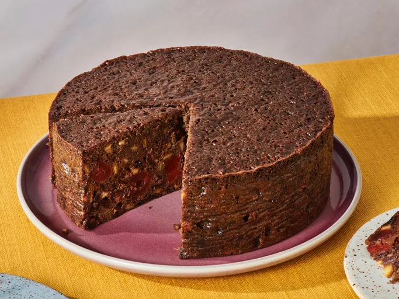

Christmas Fruitcake

Ingredients
- Candied and dried fruits: This Christmas fruitcake calls for candied cherries and citrus peels; dried currants and raisins; and dates.
- Nuts: Blanched, slivered almonds add nutty flavor and welcome crunch.
- Brandy: The fruits are soaked in brandy overnight to enhance the festive, boozy flavor of this Christmas cake.
- Flour: All-purpose flour creates structure and helps hold the batter together.
- Spices and seasonings: This Christmas cake is flavored with cloves, allspice, cinnamon, and a pinch of salt.
- Baking soda: Baking soda acts as a leavener, which means it helps the cake rise.
- Molasses and apple juice: A blend of molasses and apple juice lends moisture and adds flavor.
- Butter: A cup of unsalted butter ensures a moist cake and adds richness.
- Brown sugar: Instead of white sugar, this Christmas cake recipe calls for warm and cozy brown sugar.
- Eggs: Six whole eggs add moisture and help bind the cake batter together.
Directions
- Soak the fruit in brandy overnight.
- Dredge the soaked fruit in ½ cup flour.
- Mix the remaining flour with the spices, baking soda, and salt. Stir in the molasses.
- In a separate bowl, cream the butter. Blend in brown sugar and eggs.
- Gradually add the dry mixture to the wet mixture. Fold in the fruit.
- Pour the batter into the prepared pan until a toothpick comes out clean.